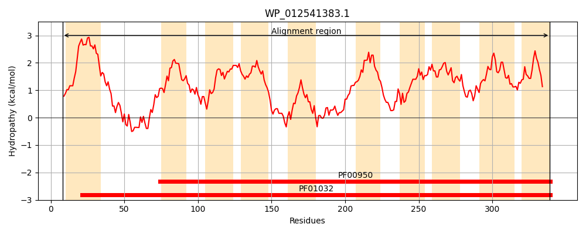
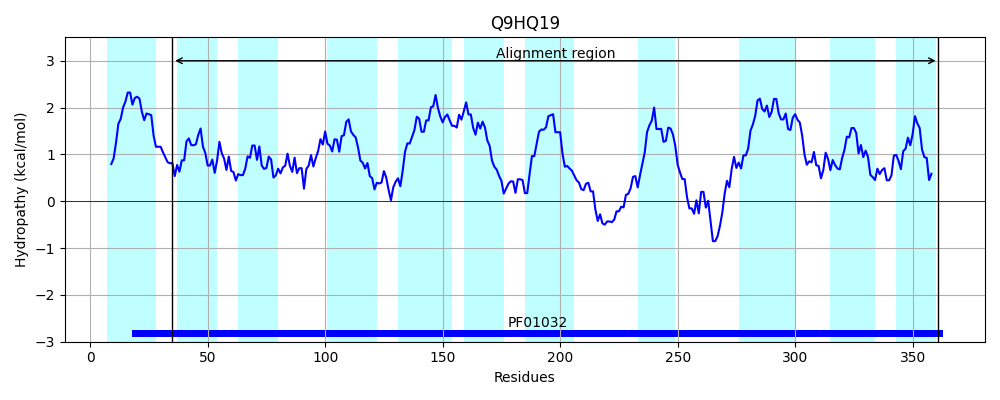
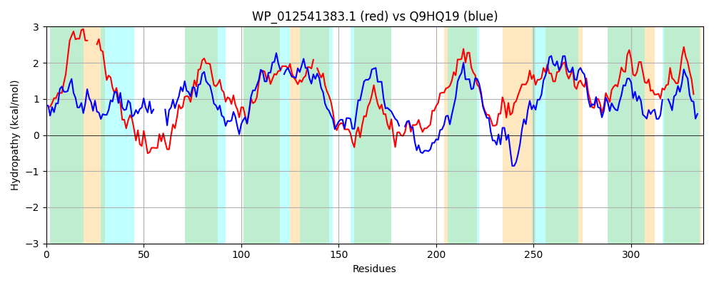

Hit Accession: Q9HQ19
Hit TCID: 3.A.1.14.9
Hit Description: gnl|BL_ORD_ID|18187 gnl|TC-DB|Q9HQ19|3.A.1.14.9 Iron (III) ABC transporter permease - Halobacterium salinarium (Halobacterium halobium).
Mach Len: 337
e:0.000000
Query TMS Count : 10
Hit TMS Count: 11
TMS-Overlap Score: 8.000000
Predicted Substrates:CHEBI:3890;corrinoid
BLAST Alignment:
Score: 515 , Bit scores: 202 bits, E-value: 2.0e-62, Alignment length: 337, Percentage identity: 37
Query: 8 TRRSMLLTGWCLLAVIVLALVI----AVGVSVGELAIPLQNVFYAISNRTGLTAEPLNRIYESVIWDFRLSRALVAACCGAGLAICGVVLQSLLKNALAEPYVLGVSAGASTGAVSIVVLGLGAGAISLSAGAFAGAF-AAFAFVALLTNGARGGNERTILAGVAASQLFNAITAYTISTSASAQQARDVMFWLLGSFSGVRWPEFQLVIVVVLAGLAVCLWYARALDAFTFGDDAAASLGIAVPQVRLILFTTAALITATIVSMAGSIGFVGLVVPHVMRFFFGPLHRTLLIASALAGAILMVLADIASRLLIAPQSLPVGVVTALVGVPFFAVII 339
T R++ + LAV V A V AV V G L P + YA + G+ + ++ RL R ++ A GA LAI G VLQ +N +A+P ++GVS+GA+ GAV+ + L I + AFAGA AAF A+ T +L+GVA L A+T++ + S ++ R M+WL+G+ G RW + + + VV+ G AV L YAR ++ G++ A +LG+ V + + +L A+++TA VS AG+IGFVGL+VPH +R GP HR LL SAL G +V AD +R PVG++TAL+G PFF ++
Sbjct: 35 TLRTVAMAALTELAVPVGASVTMHTHAVPVVSGGLPWPALTIAYAAPLQFGVPETA-----QVIVGTIRLPRIVLGATVGASLAISGAVLQGFFRNPMADPSIVGVSSGAAVGAVAAITLP-SVVVIGVQPAAFAGALIAAFTVYAIATKNGHTPTATLLLSGVAVQTLLGAVTSFLVVNSG--REIRPAMYWLMGTLHGSRWHDVEAALPVVVVGSAVLLAYAREMNVLLAGEEDAHTLGVDVDRTKRLLLAVASVVTAAAVSFAGAIGFVGLIVPHAVRLVVGPDHRVLLPVSALTGGAFLVAADTVARATATEP--PVGIITALIGAPFFLYLL 361 | Protein Hydropathy Plots: |
|---|
|  |  |
Pairwise Alignment-Hydropathy Plot:
|
|---|
|  |